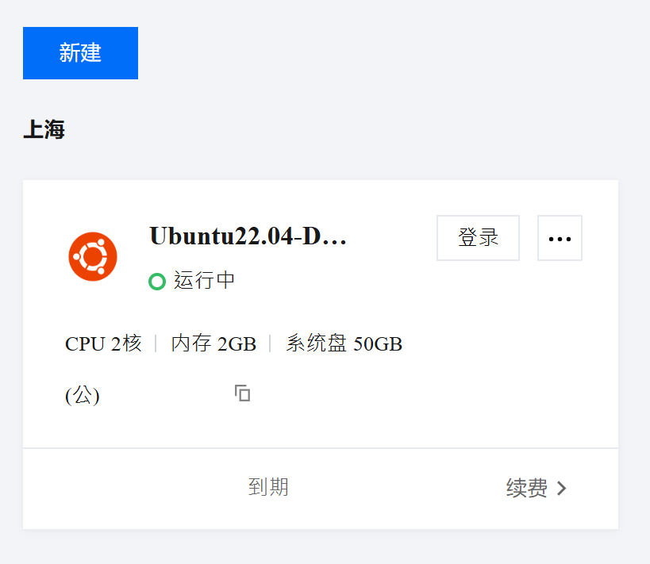
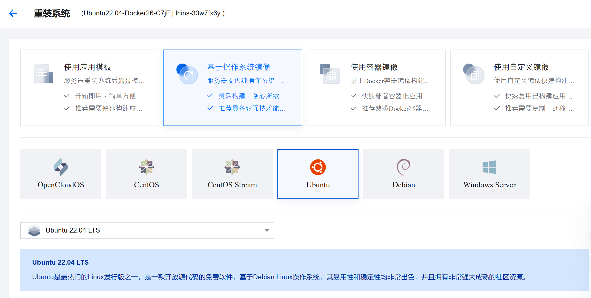
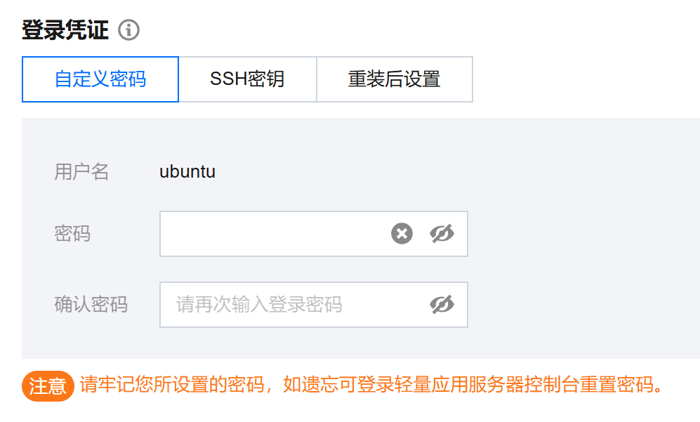
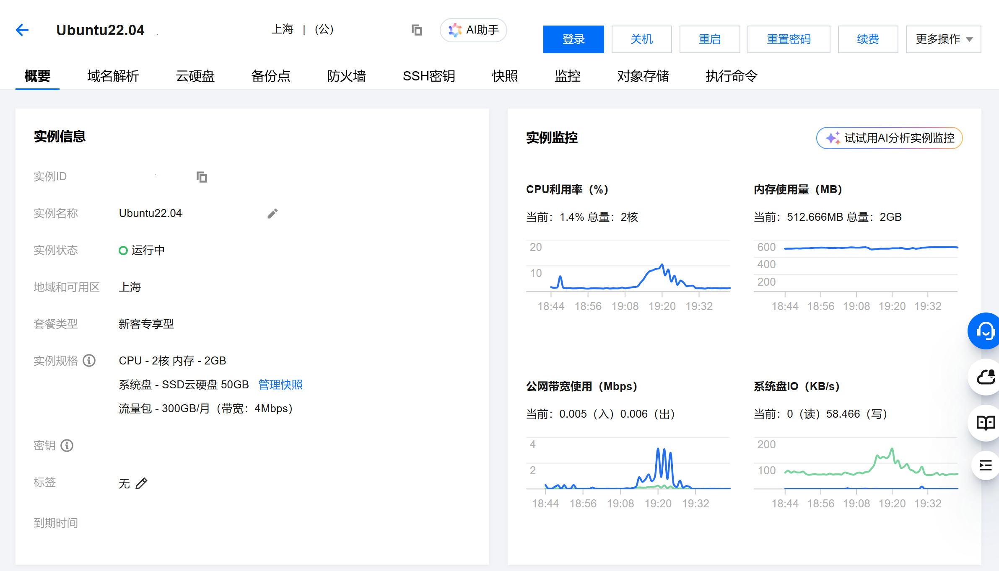
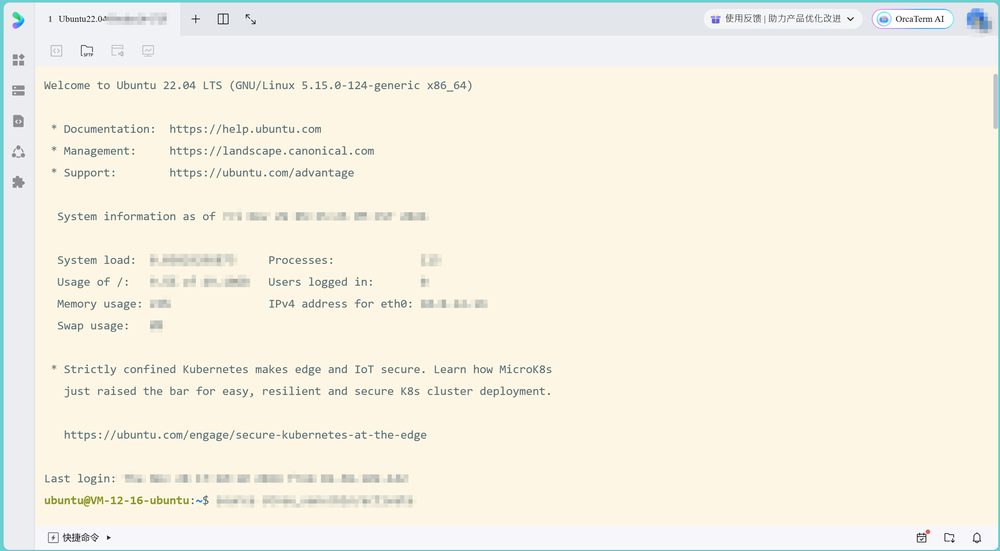
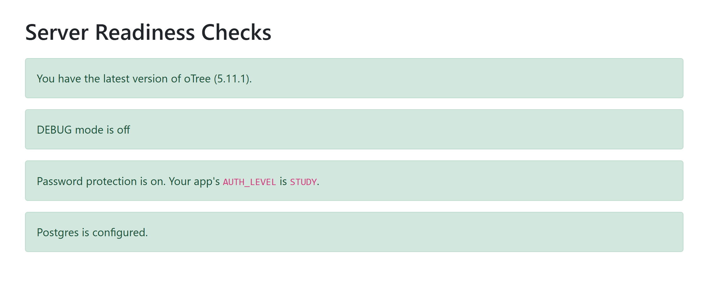
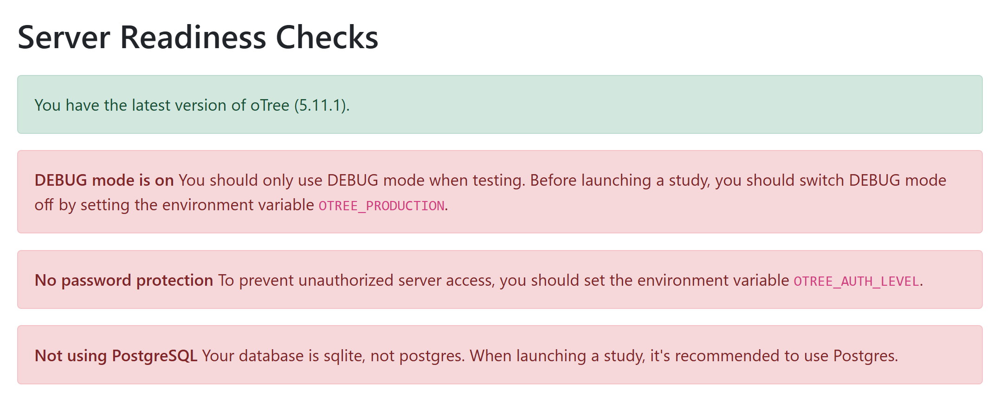
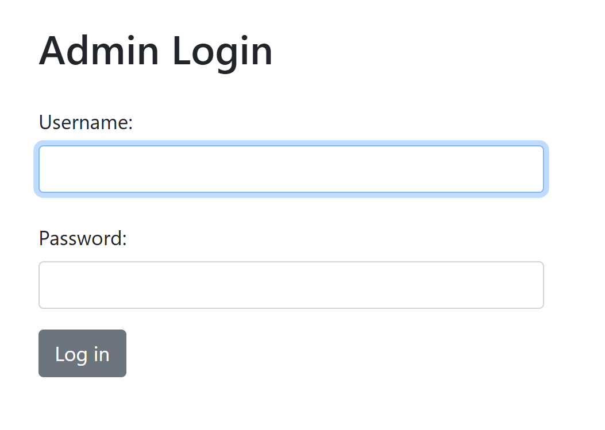

前言
oTree介紹
oTree是一個基於Python的框架，主要用於構建調查問卷和經濟學或心理學實驗。與一般的實驗平臺（例如Qualtrics）不同，oTree可以在代碼層面對項目作更自由的個性化設置，也可以自由部署服務器而非使用平臺自帶的服務器。
oTree雖有官方中文教程（同時亦有英文、日文教程），但許多部分講解不甚詳細、語焉不詳，非常不適宜初學者學習。因此，在參閱官方教程的同時，本人也強烈建議多多參考互聯網上的一些精良的非官方教程，例如：oTree : A Crash Course - Slidev（簡體中文）。
新舊版本差異
另外需要注意的是，oTree是一個活躍至今且更新頻繁的框架，其間更是經歷過一次不能向下兼容的大更新（例如Python3之於Python2）。在互聯網上尋找教程時，請務必確認教程對應的版本和您所使用的版本無較大差別。
例如，在舊版本中，模型和頁面分別在應用目錄的models.py和pages.py中設定，而新版本將之合併為了一個文件__init__.py。另外，舊版本的HTML模板在應用的templates/目錄下，而新版本的模板是在應用的根目錄下。
如何利用Python + oTree框架编写在线的心理学测验（持续更新…） - 知乎就是一篇典型的對應舊版本的教程，請在查閱時注意辨別。
使用版本
本文（以及同一系列教程）所使用的相關項目的版本如下：
| 名稱 | 版本 |
|---|---|
| oTree | 5.11.0 |
| Python | 3.10 |
| psycopg2 | 2.9.10 |
| psql | 14.15 |
準備服務器
縱然oTree的官方教程推薦Heroku作為項目的服務器，但Heroku只能選擇使用歐洲和美國的服務器，對中國大陸地區的訪問並不友好。因此，若是為了自行部署特定區域的服務器，本人推薦設置一個Linux專用服務器。
就中國大陸而言，若是需要在互聯網上發佈oTree項目，最好向提供雲服務的平臺（例如騰訊雲、阿里雲等）租借服務器。對於一般的實驗任務，選用小型的服務器（2核CPU+2GB內存）即可滿足要求。
以騰訊雲為例，成功租借服務器後，可在服務器列表點選對應的服務器並進入服務器管理頁面（見下圖）。

平臺可以幫助安裝操作系統（見下圖），本人使用的是Ubuntu 22.04 LTS。

在這個頁面也可以設置服務器用戶的密碼（Ubuntu系統中，默認的超級用戶為ubuntu）。

登錄服務器
在這之後，我們就可以登錄服務器並訪問服務器終端了。登錄服務器一般有兩種方法：
一、（推薦）使用騰訊雲自帶的遨馳終端（OrcaTerm）。在服務器的管理頁面點擊「登錄」按鈕即可打開終端（見下圖），這相當於是在瀏覽器訪問服務器終端。

下圖是透過OrcaTerm登錄服務器出現的歡迎文本，介面風格（包括背景顏色）可在設置中調整。如果沒有差錯的話，到這一步終端顯示的將會是：
1 | ubuntu@<xxx>:~$ |
這表明現在終端使用的用戶為ubuntu。

二、也可以使用Powershell通過ssh遠程連接至服務器，只需在Powershell中輸入以下命令，然後輸入對應用戶名的密碼即可：
1 | ssh <your_username>@<your_ip_address> |
其中：your_username是服務器的用戶名（Ubuntu默認情況下即是ubuntu），your_ip_address是服務器的IP地址（公網地址，可在騰訊雲的控制檯查看，應為IPv4格式）。
服務器端操作
成功訪問服務器終端後，我們得到的是一個全新的服務器（從Ubuntu 20.04開始，系統會預裝Python 3）。現在即可配置oTree項目所需的環境。
這裡將列出Linux終端中最常用的三個命令，在之後的實際操作中會大量使用這些命令，請務必熟悉用法。
ls：用以顯示當前目錄的所有內容（包括文件和子目錄）。cd：用以改變當前工作目錄。例：假設當前工作目錄為
/home/ubuntu，而這個目錄下有一個名為folder的文件夾，就可以使用1
cd folder
前往
folder文件夾，這時工作目錄也會變成/home/ubuntu/folder。＊另有一些特殊的
cd命令：
a.cd /：跳轉至（所有用戶共享的）根目錄。
b.cd ~：跳轉至當前用戶的家目錄。以默認用戶ubuntu為例，即是/home/ubuntu。
c.cd ../（重要）：返回上一層目錄。pwd：英文全稱為print work directory，用以顯示當前目錄，即返回當前工作目錄的絕對路徑名稱。
服務器配置（一次性）
一、安裝pip
更新系統的APT索引：
1
sudo apt update
sudo是Linux的命令前綴，表示以系統管理員的身份執行指令。- APT（Advanced Packaging Tools，高級打包工具），是Ubuntu用以管理軟件包的工具。
建議時常執行該指令保證軟件版本為最新。不過這一行指令只會更新軟件包列表和版本資訊，但不會真正安裝或升級任何軟件。若需要升級現有軟件，需要在此之後執行：
1
sudo apt upgrade
在成功執行以上兩步後，再次執行
sudo apt update將會得到包含1
All packages are up to date.
的輸出，說明系統現有的所有軟件版本已是最新。
檢查系統默认的Python3版本：
1
python3 --version
- 這一步的成功輸出類似
Python 3.xx.xx，說明可以使用python3這個命令。 - 可能系統中會存在多個Python3版本，
python3只會指向其中一個版本（最初是預安裝的默認版本）。 - 如果報錯，可能是因為Python3未安裝或未設置環境變量。
- 這一步的成功輸出類似
透過APT安裝（或更新）pip：
1
sudo apt install python3-pip
- pip是Python的包管理工具。
檢查pip是否已被成功安裝：
1
pip --version
表明成功安裝的輸出將與下面類似：
1
pip <version> from /home/ubuntu/.local/lib/python3.10/site-packages/pip (python 3.10)
如果報錯，可能是環境變量未正確設置，請嘗試將以下字段加入
~/.bashrc（設置環境變量請參照鏈接）：1
PATH="$HOME/.local/bin:$PATH"
二、創建虛擬環境
使用pip安裝virtualenv：
1
pip install --user virtualenv
- virtualenv用於建立項目專用的虛擬Python環境，將項目與其他項目隔離，避免不同項目間可能存在的依賴衝突。因此官方推薦將oTree項目在虛擬環境中運行。
新建一個空的虛擬環境用以安裝oTree環境：
1
python3 -m virtualenv otree_venv
- 有關該虛擬環境的具體內容將會存放在
otree_venv文件夾中。 otree_venv文件夾應獨立於項目文件夾，建議把兩個文件夾都放在用戶的家目錄（即/home/ubuntu）。需要注意的是，以上代碼中的otree_venv實際上是相對路徑，所以請使用pwd確保您是在/home/ubuntu下運行的代碼，否則請改用絕對路徑的形式：1
python3 -m virtualenv ~/otree_venv
- 有關該虛擬環境的具體內容將會存放在
檢查虛擬環境是否已成功配置：
1
source otree_venv/bin/activate
- 這行命令用以激活剛才新建的虛擬環境。若先前配置正確，在命令行的最前面會出現形如
(otree_venv)的前綴，表示現在已成功進入虛擬環境。我們將會在之後每一次啟動服務器時運行該命令。 - （進階）如果您認為每一次啟動服務器都需要輸入此命令過於繁複，可以將該命令加入
~/.bashrc（設置環境變量請參照鏈接），這樣每次在終端登錄該用戶時，系統會自動執行該命令激活並進入虛擬環境。當您的服務器只有oTree這一個項目時，這將是一個增加操作便利的選擇。 - 同上，請確保這行命令在家目錄執行。
若需要退出虛擬環境，請使用命令
1
deactivate
- 這行命令用以激活剛才新建的虛擬環境。若先前配置正確，在命令行的最前面會出現形如
使用pip在虛擬環境中安裝oTree：
1
pip install otree
- 請確保這行命令在虛擬環境中執行，這樣oTree庫才不會與外界有任何關聯。
三、配置PostgreSQL數據庫
oTree默認使用SQLite作為開發環境的數據庫。SQLite作為輕量級數據庫，可以勝任大部分本地測試任務。但是，由於SQLite所有鎖實現都是基於文件鎖，一旦將項目投放至服務器進行多人在線實驗，其將會無法有效處理來自多個實驗參與者的併發訪問，可能會導致數據錯誤或丟失。
因此，在實際的生產環境（高併發的多用戶環境）中，oTree建議開發者使用更穩定的PostgreSQL數據庫以替代SQLite。下面是詳細的配置步驟：
透過APT安裝PostgreSQL：
1
sudo apt-get install postgresql postgresql-client
- 安裝完成後，系統會創建一個PostgreSQL的超級用戶，默認用戶名為
postgres，密碼為空。 - 此時，整個Ubuntu系統中將會有我們一直使用的
ubuntu和數據庫相關的postgres兩個用戶。由於ubuntu並沒有訪問數據庫的權限，因此後續的操作將在postgres用戶中完成。
- 安裝完成後，系統會創建一個PostgreSQL的超級用戶，默認用戶名為
切換用戶至
postgres：1
sudo -i -u postgres
- 注意切換用戶時需要使用
sudo前綴。 成功切換後，終端將顯示
1
postgres@<xxx>:~$
- 注意切換用戶時需要使用
使用
psql進入SQL Shell：1
psql
- 之前我們的所有命令都是在Ubuntu命令行執行的，而SQL Shell則是PostgreSQL的命令行工具，它的語法與Ubuntu的命令並不相同。
默認情況下，SQL Shell只允許
postgres訪問。若訪問成功，會得到以下格式的輸出，1
2psql (<version>)
Type "help" for help.然後出現
1
postgres=#
的字段，表明正在等待輸入一段SQL Shell命令。這類似Ubuntu中的
1
<username>@<xxx>:~$
有時您可能會遇到
postgres-#，這表明您已經輸入了一段SQL Shell命令的一部分，但整個命令還未結束，您需要補全命令終端才會繼續運行。發生這種情況的主要可能是遺漏了SQL Shell命令最後的分號（SQL Shell命令以分號作為結束符）。總結：
a.postgres=#：等待用戶輸入一段完整的命令。
b.postgres-#：當前已接收的輸入不完整，等待用戶繼續輸入命令的剩餘部分。當您需要退出SQL Shell回到Ubuntu的Shell時，有三種方法：
a. 在命令行中鍵入
\q。
b. 在命令行中執行exit命令。
c. 使用鍵盤快捷鍵Ctrl+D（實質上是鍵入\q）。
為
ubuntu添加訪問PostgreSQL的權限：1
CREATE ROLE ubuntu WITH LOGIN SUPERUSER PASSWORD '<your_password>';
- 在這一步，我們實際上是在PostgreSQL中創建了一個同名的
ubuntu用戶，而PostgreSQL會自動將Ubuntu和PostgreSQL的同名用戶聯繫起來。 輸出
CREATE ROLE表示成功添加。此時輸入\du檢查PostgreSQL現有所有用戶，將會得到類似以下輸出：1
2
3
4
5List of roles
Role name | Attributes | Member of
-----------+------------------------------------------------------------+-----------
postgres | Superuser, Create role, Create DB, Replication, Bypass RLS | {}
ubuntu | Superuser | {}
- 在這一步，我們實際上是在PostgreSQL中創建了一個同名的
創建oTree項目將使用的數據庫：
1
CREATE DATABASE otree_db
- 輸出
CREATE ROLE表示成功創建。因為我們給與了ubuntu超級用戶的權限，它將可以直接訪問otree_db。 輸入
\l檢查PostgreSQL現有所有數據庫，將會得到類似以下輸出：1
2
3
4
5List of databases
Name | Owner | Encoding | Collate | Ctype | Access privileges
-----------+----------+----------+-------------+-------------+-----------------------
postgres | postgres | UTF8 | en_US.UTF-8 | en_US.UTF-8 |
otree_db | postgres | UTF8 | en_US.UTF-8 | en_US.UTF-8 |
- 輸出
至此，我們已經完成了在SQL Shell中的所有初期設置。現在，退出SQL Shell並返回用戶
ubuntu，檢查是否已與PostgreSQL數據庫連結：1
psql -U ubuntu -d otree_db
- 這行命令的意義在於使用
ubuntu用戶連結至PostgreSQL的otree_db數據庫，其中：
a.-U ubuntu指定用於連結的PostgreSQL用戶。
b.-d otree_db指定要連結的數據庫名稱。 - 成功執行該命令將會進入SQL Shell，得到類似第3步的輸出。
- 這行命令的意義在於使用
使用pip在虛擬環境中安裝psycopg2：
1
pip install --user psycopg2
- 請確保這行命令在虛擬環境中執行。
- PostgreSQL數據庫本身是與Python無關的。要使基於Python的oTree與PostgreSQL連結，需要使用psycopg2，一個用於連結PostgreSQL的Python庫。它提供了一組函數和方法，允許用戶在Python程序中對數據庫進行各種操作。
- 當然，對數據庫進行操作的部分已包裝在oTree內部的底層代碼中，我們並不需要手動實現這些內容。
四、設置環境變量
oTree引入了一些環境變量用以改變實驗的某些參數。在本文中，我們至少需要修改以下四個環境變量：
DATABASE_URL：數據庫的url，將值設置為postgres://ubuntu:<your_password>@localhost/otree_db。- 這一步使我們的oTree項目與PostgreSQL的
otree_db數據庫連結。 - 這一段url的解釋如下：
a.postgres://：數據庫的協議。
b.ubuntu:<your_password>@：連結數據庫的用戶名和密碼。
c.localhost：數據庫所在主機地址，localhost表明數據庫運行在本地服務器。
d.otree_db：連結的數據庫的名稱。
- 這一步使我們的oTree項目與PostgreSQL的
OTREE_PRODUCTION：決定oTree是否以生產模式運行，將值設置為1。- 可選值包括
0（默認，開發模式）和1（生產模式）。 - 在生產模式下，實驗參與者的頁面將不會出現Debug Info，且報錯時不會在頁面顯示錯誤信息。鑒於實驗參與者可能在Debug Info或錯誤信息中獲知系統的某些敏感信息，為了系統的安全，在正式實驗時請務必使用生產模式。
- 可選值包括
OTREE_AUTH_LEVEL：決定oTree的訪問控制級別，將值設置為STUDY。- 默認情況下值為
DEMO，此時任何人均可訪問實驗頁面。值為STUDY時系統將會使用密碼驗證用戶，適合在實際實驗時使用。
- 默認情況下值為
OTREE_ADMIN_PASSWORD：系統使用的密碼，格式是字符串。- 您應該設置系統的密碼以防止實驗參與者進入系統管理頁面。
設置環境變量的方法請參照鏈接，以上變量均設置為用戶變量即可。
五、使用Git進行項目文件傳輸
最後，我們需要將自己電腦上的oTree項目上傳至服務器。考慮到我們會不斷地對項目進行微調更新版本，並在服務器端同步版本，最好的方法是使用Git實現文件傳輸。
- 建議這一步將項目文件夾放置在家目錄下。
Git及平臺（例如Github）的使用因與本文內容無太大關聯，故不在此作詳細說明。若有需要，請參考互聯網上的教程。
六、最後檢查
完成以上所有步驟後，用戶的家目錄應該會存在兩個文件夾（在家目錄使用
ls查看）：1
otree_project otree_venv
前者是項目文件夾（假設文件夾名為
otree_project），透過Git管理；後者是專為項目配置的虛擬環境的文件夾，裡面是與虛擬環境相關的文件。激活虛擬環境，進入
otree_project並執行1
otree
檢查oTree是否成功安裝。若出現包含
1
Command 'otree' not found
的輸出，說明oTree並未成功安裝在虛擬環境中。
繼續執行
1
otree resetdb
檢查oTree是否與PostgreSQL成功連結。若沒有報錯且返回包含
1
Database engine: postgresql
的字段，說明PostgreSQL已配置成功。若出現報錯，請檢查環境變量
DATABASE_URL是否成功設置。最後，執行
1
otree prodserver
oTree成功運行後，進入實驗網頁並登錄管理員賬號。（這裡的詳細操作方法參見下一部分的第6、7步）
點擊「Server Check」檢查服務器配置是否完善。
- 第一行輸出項目的oTree版本。
- 第二行和第三行的內容是在「環境變量」部分設置的。
- 第四行表明我們已成功將Postgres與項目連結。由於oTree官方推薦使用Postgres，因此若使用默認的SQLite此處會出現警告。

正常情況的顯示

可能出現的警告
每次進行實驗前的準備
在完成以上一系列的配置後，我們便可以正式發佈實驗了。以下是每次進行實驗前需要完成的步驟：
登錄服務器（方法見上），並檢查用戶名是否為之前配置時使用的用戶名。
激活虛擬環境：
1
source otree_venv/bin/activate
- 若您在先前的配置中已將該命令加入用戶變量，則略過這一步。
進入項目文件夾：
1
cd otree_project/
更新項目版本：
1
git pull
如果服務器上的項目版本已是最新，執行該命令會輸出
1
Already up to date.
重置項目數據庫：
1
otree resetdb
此時會收到來自oTree的提醒：
1
2This will delete and recreate your database.
Proceed? (y or n):輸入y後回車即可。之後oTree將會輸出
1
2Database engine: postgresql
Created new tables and columns.表明數據庫已成功重置。
- 注意：這一步會刪除以前所有得到的數據，請在保證所有數據均已下載備份後再執行此命令。
運行oTree：
1
otree prodserver
與在本地開啟測試的
otree devserver類似，默認情況下，該命令會將oTree运行在8000端口。如果您想在其他端口運行，請在命令後加上端口號，例如80端口：1
otree prodserver 80
注意：無論選擇在哪個端口運行，都需要在騰訊雲的服務器管理頁面（見下圖）令防火牆允許外部IP對該端口的訪問，這樣實驗參與者才有訪問實驗的權限。
成功運行oTree後，終端會顯示如下字段：
1
2Running prodserver
timeoutworker is listening for messages through DB此時就可以透過網址進入實驗網頁了
1
http://<ip_address>:<port>
其中，
<ip_address>是服務器的公網IP，<port>是上一步開啟的端口。HTTP協議的默認端口是80，因此如果上一步開啟了80端口，網址中可以省略端口號：
1
http://<ip_address>
由於我們在「環境變量」一步設置了服務器的管理員密碼，因此進入實驗網頁後我們會遇到以下畫面：

默認情況下，Username是
admin，Password是環境變量中OTREE_ADMIN_PASSWORD的值。成功登錄後，頁面上部會出現「Logout」字樣。
當需要關閉實驗的時候，直接在運行實驗的終端按Ctrl+C鍵即可。